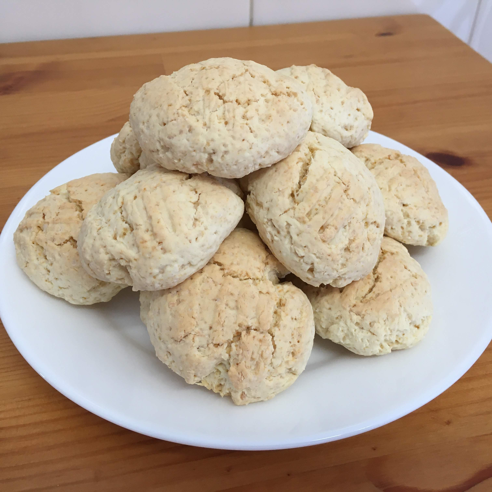

Biscoito quebrador

Ingredientes
- 1 ovo
- 40 g de manteiga
- 100 g de açúcar
- 160 g de amido de milho
- 190 g de farinha de trigo
- 25 g de coco ralado
- 6 g de fermento químico
- 65 g de leite
Modo de preparo
- Misturar o ovo, a manteiga e o açúcar.
- Adicionar o amido, a farinha, o coco ralado e o fermento. Mexer bem e adicionar o leite aos poucos, até dar o ponto de moldar, sem grudar nas mãos.
- Modelar bolinhas e achatar e dispôr em tabuleiro untado.
- Assar a 200º C por 20 a 25 minutos, até que a parte de baixo dos biscoitos esteja ligeiramwnte dourada.